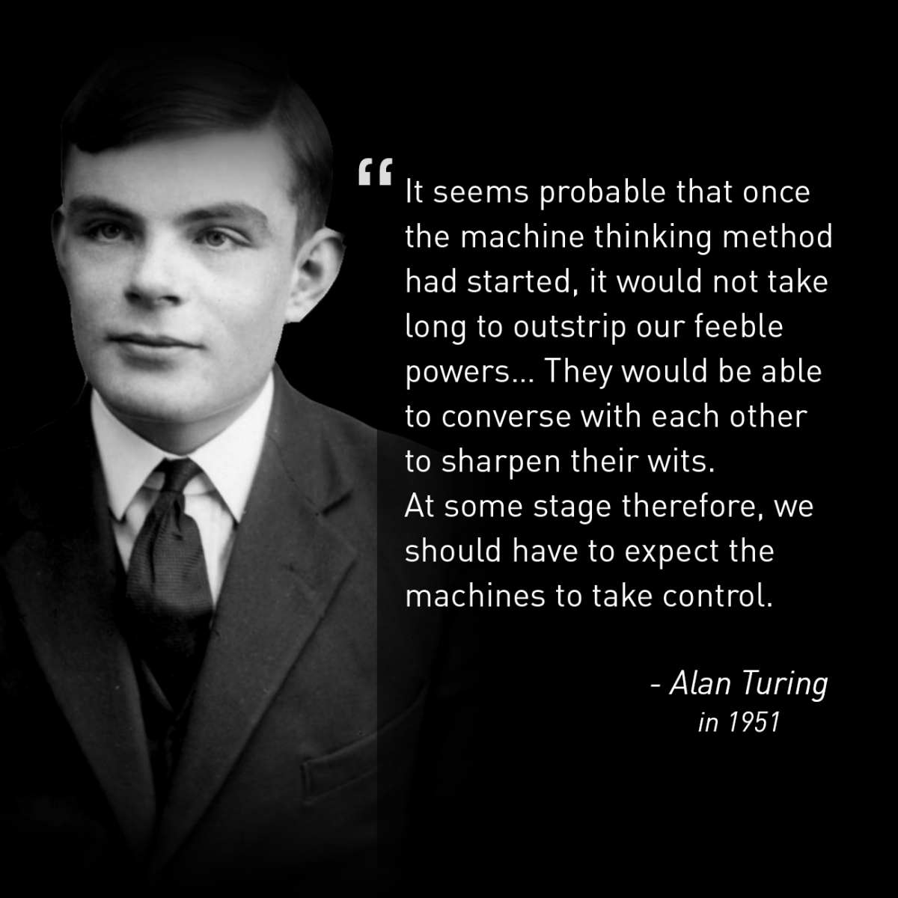
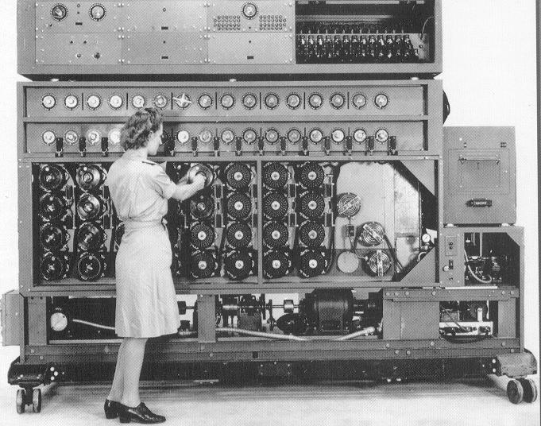

Alan Mathison Turing OBE FRS (/ˈtjʊərɪŋ/; 23 June 1912 – 7 June 1954) was an English mathematician, computer scientist, logician, cryptanalyst, philosopher, and theoretical biologist.[2] Turing was highly influential in the development of theoretical computer science, providing a formalisation of the concepts of algorithm and computation with the Turing machine, which can be considered a model of a general-purpose computer.[7][8][9] Turing is widely considered to be the father of theoretical computer science and artificial intelligence.[10] Despite these accomplishments, he was never fully recognized in his home country during his lifetime due to his homosexuality, which was then a crime in the UK.